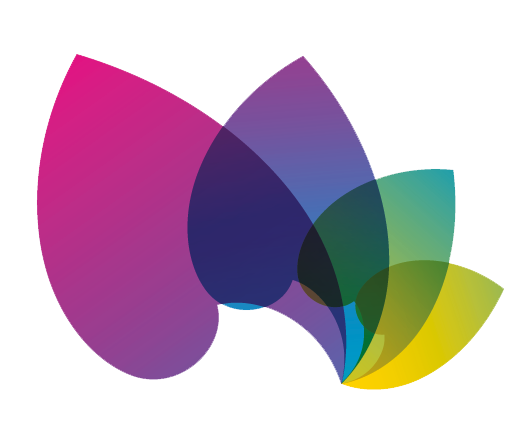
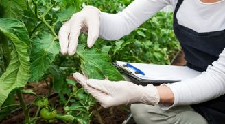
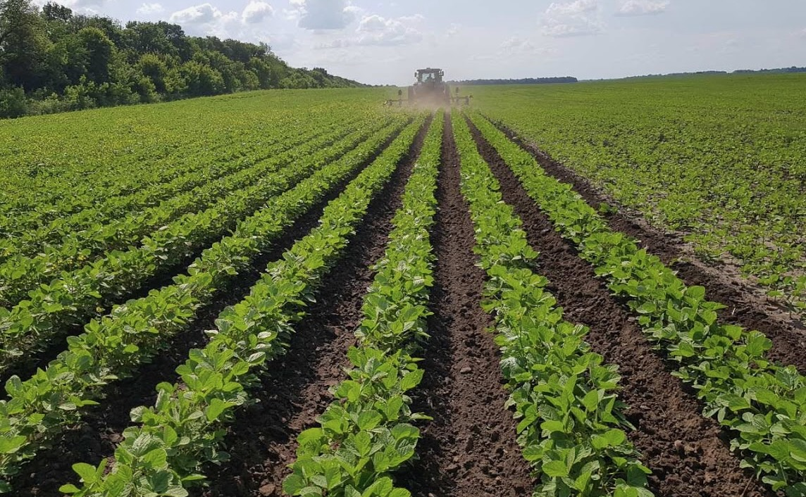
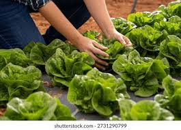
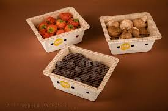
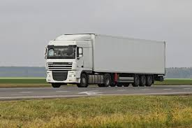

Наш шлях починається в лабораторії, де ретельно перевіряється кожна партія посівного матеріалу. Ми використовуємо лише натуральне насіння без ГМО. Паралельно наші агрономи проводять експертний аналіз ґрунту, щоб переконатися у відсутності залишків важких металів чи шкідливих хімікатів від попередніх сезонів. Ми готуємо землю виключно органічними методами, зберігаючи її природну мікрофлору та багатство українського чорнозему.

Після висадки рослини ростуть у своєму природному темпі під теплим сонцем. Замість небезпечних хімічних пестицидів ми застосовуємо біологічний захист — корисних комах, які захищають посіви від шкідників. Для живлення використовуються лише натуральні органічні добрива. Ми впровадили систему точного крапельного поливу, яка подає чисту воду безпосередньо до коренів, а енергію для насосів постачають наші власні сонячні панелі.

Збір урожаю — це найвідповідальніший момент, де важлива кожна година. Наші фахівці за допомогою спеціальних датчиків визначають точний «пік стиглості» плодів. Саме в цей момент в овочах міститься найбільша кількість вітамінів, мікроелементів та природного цукру. Більшість культур ми збираємо вручну на світанку, щоб літня спека не пошкодила ніжні плоди та зелень.

Одразу з поля продукція потрапляє на сучасну лінію сортування, де овочі очищаються потоками повітря та калібруються. Ми повністю відмовилися від пластику. Для пакування використовуються лише лотки з пресованого картону та паперові пакети, які підлягають повній переробці. Плоди, які мають візуальні дефекти (але залишаються смачними та корисними), ми відправляємо на власне виробництво соків та пюре, працюючи за екологічним принципом Zero Waste.

Останній крок — доставка свіжості. Відсортовані та упаковані овочі миттєво охолоджуються у спеціальних камерах, що зупиняє процеси в'янення без заморожування. Далі фірмові автомобілі-режератори зі стабільним клімат-контролем розвозять продукцію по магазинах. Весь шлях від поля до полиці супермаркету займає від 4 до 12 годин, тому ви завжди отримуєте продукти такими ж свіжими, наче їх щойно зірвали на городі.